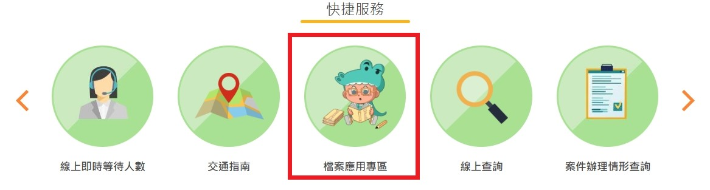

一、開放參與
本所為開放民眾參與，適時運用多元管道導入民眾觀點，透過溝通與對話的方式，共創與民眾合作的契機，執行情形及成效詳如下表：
(一) 善用網路管道
| 名稱 |
執行情形及成效 |
| LINE |
-
執行情形：
本所 LINE 官方帳號除了主動推播相關地政消息及活動、 24 小時 AI 自動回覆訊息，若民眾有其他疑問也可切換成專人回覆。
-
執行成效：
透過民眾提問，了解民眾對地政業務的需求。其中，在專人回覆的訊息中，民眾詢問地籍清理案件之問題，擬於後續辦理地籍清理案件相關宣導活動。
【針對民眾的問題由專人回覆】
|
| 網站線上投票活動 |
-
執行情形：
每季線上投票由各課室輪流辦理，藉此了解民眾對各項政策的了解程度及民眾相關需求。
-
執行成效：
共計 219 人次參與。
（1）「網路申請登記」網站投票結果，約有 25℅ 民眾不知道該項便民措施，故本所透過 LINE、大廳輪播機等各管道加強宣導。
 【透過放置海報加強對民眾宣導】
【透過放置海報加強對民眾宣導】
（2）「地籍圖查詢專區圖資瀏覽服務」網站投票結果，反映民眾認為新北不動產愛連網的平台操作手冊尤為重要，故測量課新增「新北不動產愛連網網站查找說明書」之創新提案，以期提升民眾後續自主使用圖資查詢平台之效益。
|
| 網站有獎徵答活動 |
-
執行情形：
每季網站活動由各課室輪流辦理，宣導各類活動之同時民眾也能取得精美獎品。
-
執行成效：
共計 388 人次參與。透過民眾在有獎徵答的反饋改善網站配置，在大家來找查網站活動中，約 32% 民眾答錯「時光廊道展覽」的網站專區放置位置，故本所將「檔案應用專區」放置於網站首頁快捷服務，供民眾快速點選使用。

【透過民眾反饋將檔案應用專區放置於快捷服務】
|
| 網站建置開放參與專區 |
-
執行情形：
於本所網站建置開放參與專區，民眾可分享創新提案、網站改善建議及線上報名研習活動。
-
執行成效：
本年度無創新提案及網站改善建議。於研習活動方面，共計辦理 7 場講座。講座結束後提供問卷調查，期能作為精進講座辦理之參考。其中，有 1 位民眾反應講者語速過快，其餘皆給出滿意評價，而在「希望後續辦理的講座類型」則是法令解析、電腦技能為大宗，本所將採納民眾建議以精進下次的講座辦理。
 【民眾問卷回饋】
【民眾問卷回饋】
|